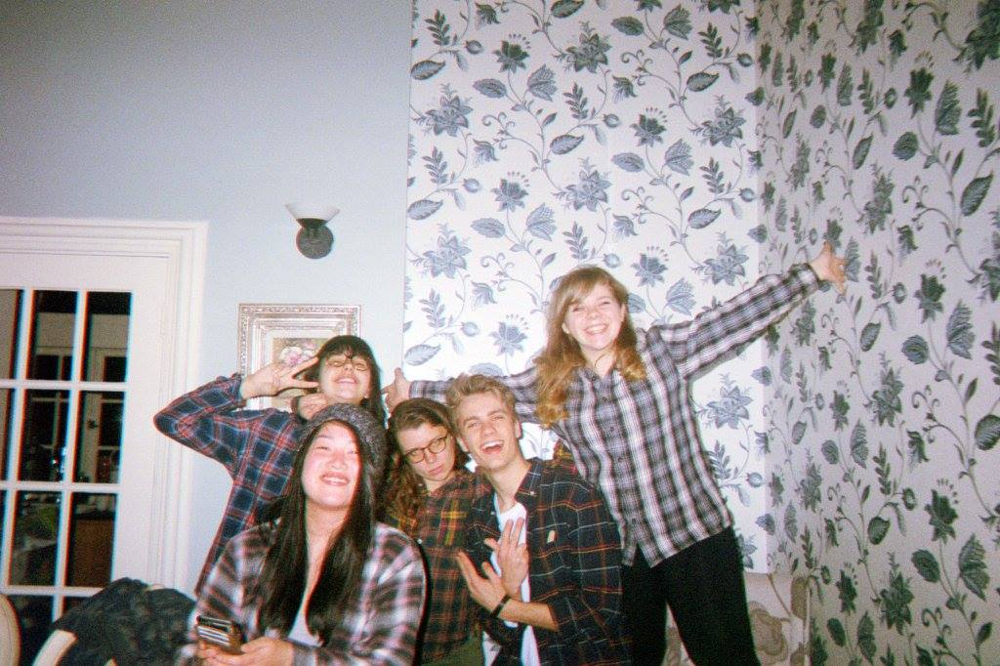

During spring of 2016 I joined Scout studio as a designer, and worked on a team tasked with redesigning and creating Scout's website. We started with a brand dive, assessing the current state of Scout and its collateral, and from there moved onto sketching, wireframing, high fidelity mockups, and eventually coding. The final product is live here!
Once we mapped out the skeleton of the site, we divided up the pages between each team member, and created rough paper sketches of what we envisioned those pages would look like. It was useful to be able to start away from the computer, and quantify our ideas without any technological constraints.
After finalizing our sketches, we moved onto the computer and translated our drawings to wireframes using sketch. It was collectively our first times using sketch, so there was definitely a learning curve. However when paired with Invision, it became a powerful tool to convey what we wanted the user experience to be.
The next step in our process was creating high fidelity mockups of our wireframes. This step really quantified our designs, and took them from more abstract ideas to actual products. This was also an important step, as we got feedback from the developers on what was possible or within their scope. These constraints helped us create designs that were realistic and could be translated to code.
We worked on an agile system, with weekly check-ins and critique. It was really helpful to get together and see everyone's progress, as everyone was working on different pages and we wanted to ensure a cohesive style while also providing our personal touches.
Once the designs were completed, we handed them of to the amazing developers who turned our designs into an actual product, which is an unbelievable gratifying experience. I always leave projects like this with a newfound respect for the every aspects of this process, and how hard work and teamwork can create powerful results.
